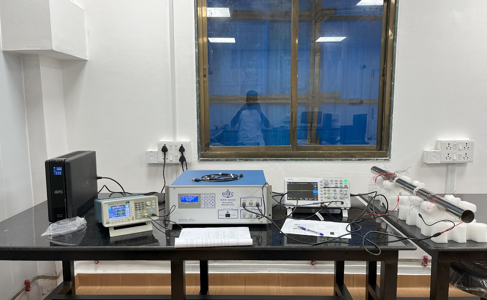
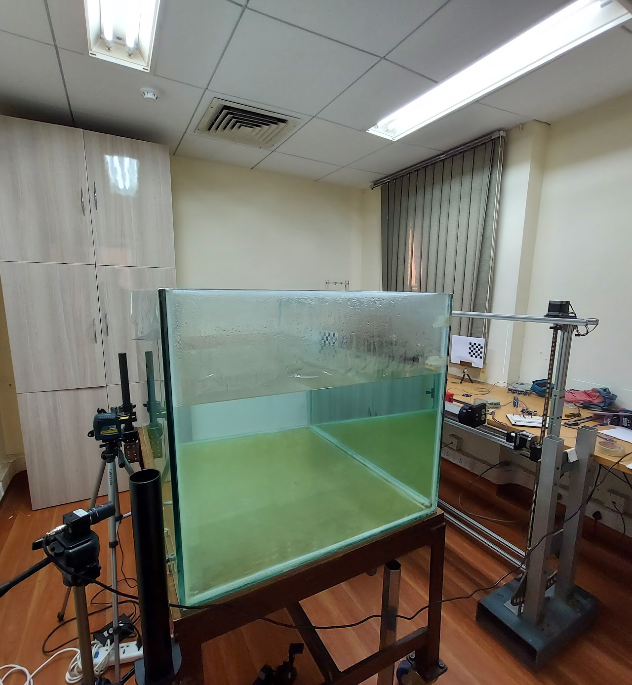
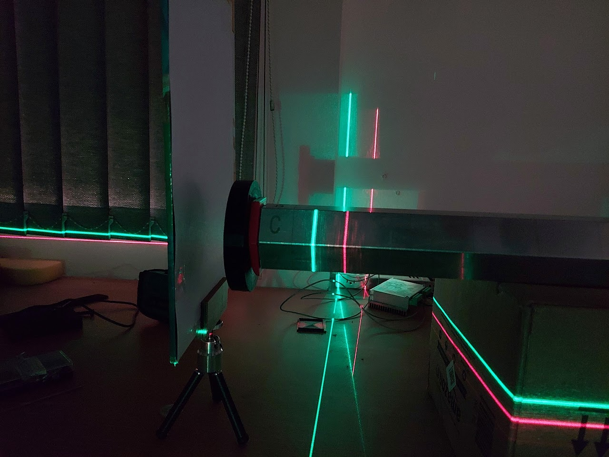
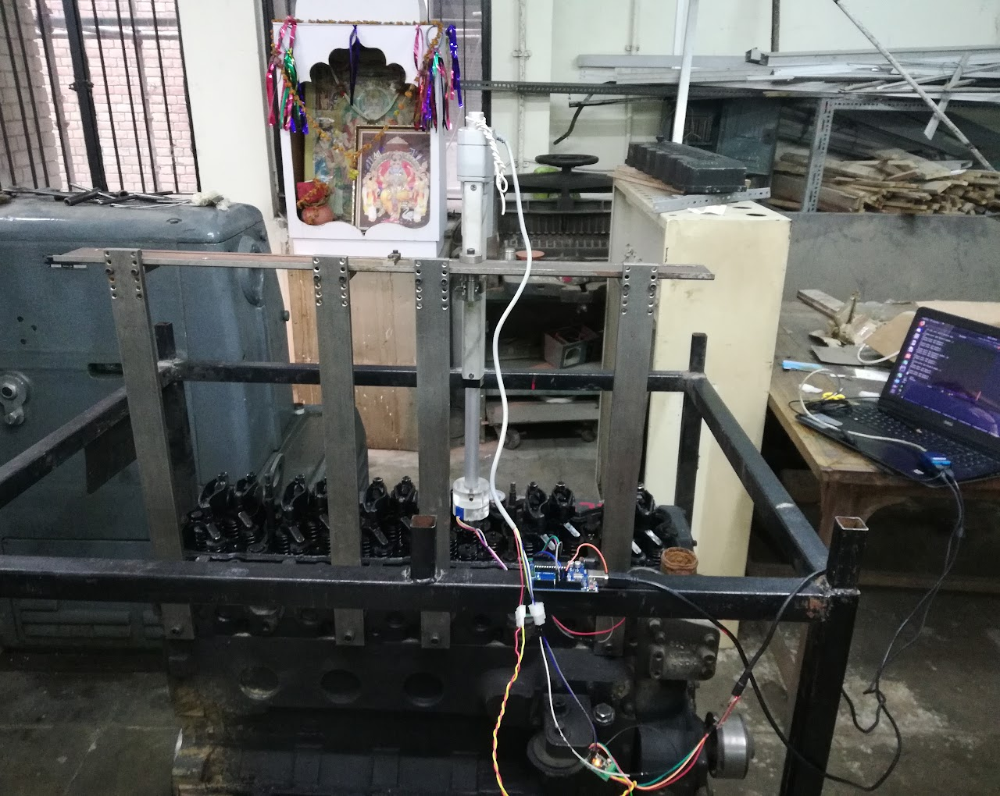
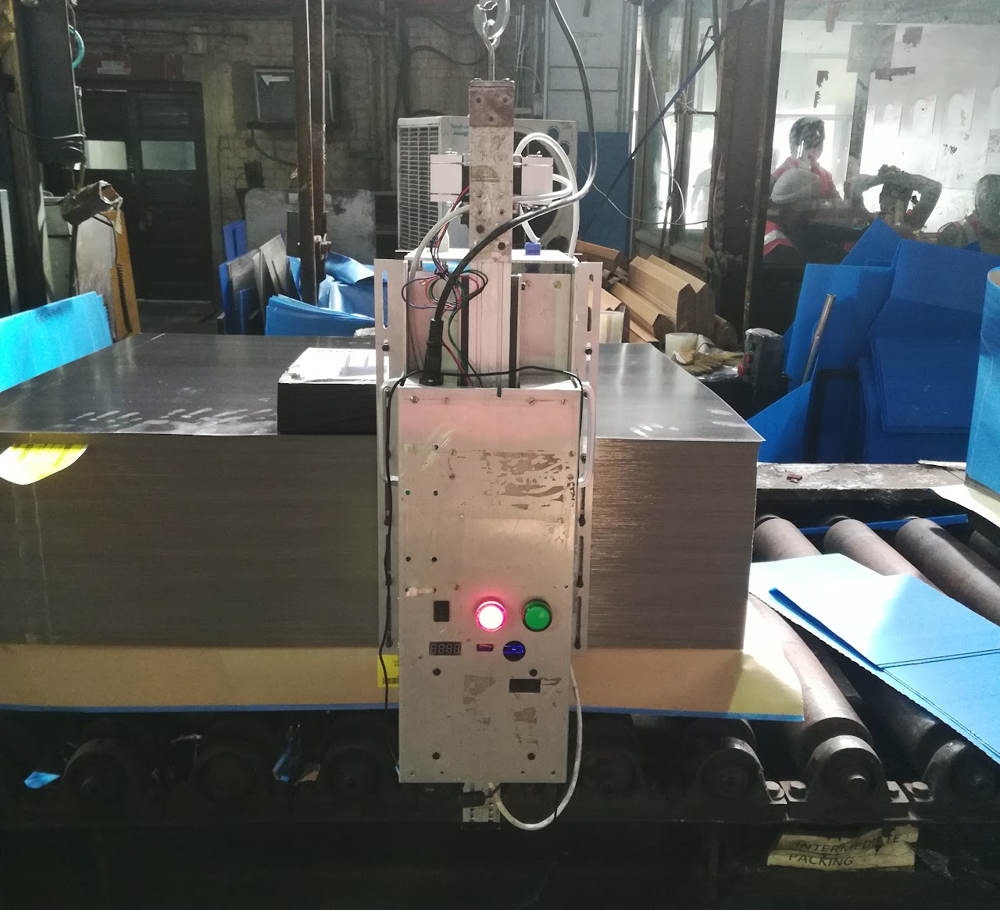
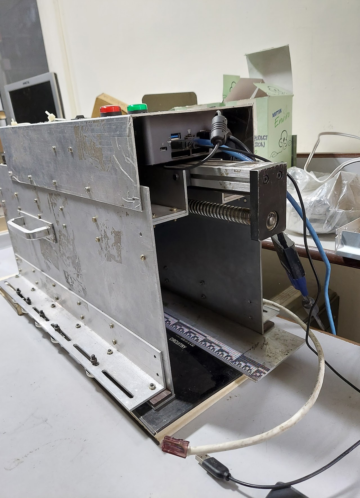
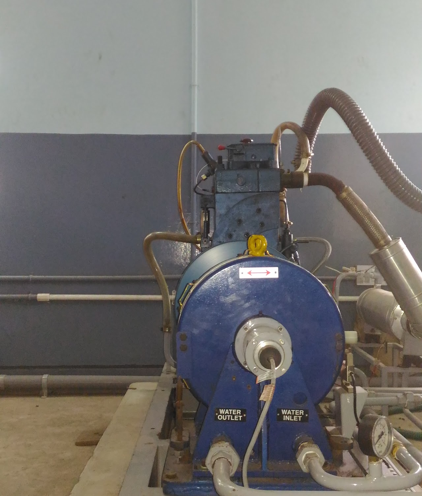

Projects & publications
Research
Damage Detection in Insulated Pipes Using Ultrasonic Guided Waves
Pipe structures are widely used across industrial sectors — oil, gas, chemical — and often run for hundreds of kilometres underground, making them inaccessible and difficult to inspect at every location. Insulation on the outer surface adds a further barrier to inspection.
Structural Health Monitoring (SHM) using the Ultrasonic Guided Waves (UGW) method is adapted to monitor the structure, locating and localising damage without removing insulation.


Remote Metrology of Hexagonal Wrapper Tube through Glass Medium
Develops a damage-inspection profilometry system for a hexagonal subassembly component of a nuclear fast breeder reactor core, using a structured light source and an imaging sensor operating through an 80–120 cm thick radiation shield glass medium placed between the component and the source/imaging system.
The work involves developing, standardising, and implementing a methodology for remote metrology of a 500 mm hexagonal wrapper positioned roughly 2.0–2.5 m from the laser/camera system, through the shielding glass window, at an expected precision of 50 microns.


Techniques for Miniature Actuation and Imaging (Engine Inspection)
Diesel engine inspection without stripping the system down, to save inspection time. The fuel injector may be parallel to the bore axis or inclined at a specified angle to it.
The full 360° angular extent of the bore is inspected by a borescope camera aligned axially with the bore but fitted with a 45° mirror to capture the lateral surface. Images and video from the camera are mosaicked and displayed as an unrolled cylinder.

Sheet Counting
A machine to visually count stacks of 200-micron thick sheets with high accuracy (<0.1%) — in this case, thin tin-coated mild steel sheets with optically challenging specular characteristics that are not perfectly aligned. Manual counting is dangerous and time-consuming.
Simply dividing overall thickness or weight by nominal sheet thickness fails to hit the required accuracy, since individual sheets deviate from nominal values due to manufacturing variation. The system performs image acquisition, optical distortion correction, customised stitching, and occluded-sheet compensation, counting a 50 cm stack in under 3 minutes, with results shown on a numeric display. (Hardware development.)


Performance and Emissions of a CI Engine Using Waste Cooking Oil Blends
Investigated Waste Cooking Oil Methyl-Ester-Ethanol-Diesel blends at constant compression ratio and varying speeds. Significant improvement in brake thermal efficiency and brake-specific fuel consumption was observed compared with diesel, and NOx, CO, and CO₂ emissions for ethanol blends were lower than diesel at higher loads.
Vinoothan Kaliveer, Prajwal Raphael Sequeira, Rayan Veneeth D'sa, Simmons Antony Dsilva, Sandeep B., Rolvin S. D'silva, Investigation on the Performance and Emissions Characteristics of CI Engine Using Different Blends of Waste Cooking Oil Methyl Ester-Ethanol-Diesel Oil, Energy and Power, Vol. 6 No. 1A, 2016, pp. 28–32. doi: 10.5923/c.ep.201601.05

Bottle Inspection
A vision system to inspect soft-drink PET bottles ranging from 250 ml to 1.5 litres and automatically discard faulty bottles from the conveyor — under/overfilled liquid, damaged closure, torn label.
A single high-speed camera captures images on the conveyor, running at 400–600 bottles per minute; captured images are processed and faulty bottles are kicked from the line pneumatically.

Academic Projects
Machine Learning Project
Coded and tested gradient descent to train and validate L1- and L2-penalised linear regression from scratch. Performed exploratory data analysis, eliminated correlated variables, and imputed missing values; trained and validated hyperparameters for elastic-net logistic regression, neural networks, support vector machines, and random forests on a classification problem, checking feature importance along the way.
Modified an existing CNN training pipeline to classify bees vs. ants on Google Colab, tuning learning rate, momentum, and weight decay for regularisation. Also pre-processed data for clustering, trained and visualised k-means clustering, and trained PCA and kernel PCA, selecting dimensions based on variance explained.
Gesture Control of EMU Two-Link Manipulator
Controlling the EMU robot via hand gesture using inertial measurement unit sensors.
Smart Switch
IoT-enabled, presence-activated smart lighting solution built for the Mechatronics Department's motion-tracking coursework.